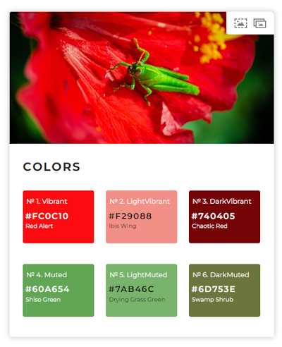

Get and use a dominant color that matches the header image
Vibrant Color library and recalculating its HSL output values
The pages of this website are all structured according to the scheme Header, Content, Footer, where the header contains an individual hero image and, like the footer, has a dark gray background color. I chose dark gray at the time because I needed contrast and it matches all the other colors, since the header image is slowly overlaid by the header background color as you scroll.
In July last year, in Discoveries #19 - Visual Helpers, I introduced two tools that deal with determining the dominant color from an image, and since then I’ve been buzzing around in my head about using one of them to color the header and footer to match the image.
After a short testing period I decided to use Vibrant Colors (also because of the good example by Konstantin Polunin on Codepen) and how it works and how I had to adapt the results to my needs I want to highlight in this post.
The work on the project node-vibrant, is probably based on vibrant.js (at least this archived repo refers to it) and is actually a Node.js solution, but you can also just use it in the browser. Since the determination of the total of 6 different colors (Vibrant, Muted and both with its variants of Light und Dark mode) from an image can possibly lead to performance problems in the browser, the maintainers have focused on Node.js and also built in a WebWorker solution. My approach is based on the already fully loaded page, including the header image and the display with the original dark gray background color. So the new color is simply icing and thus should not lead to problems.
Here is an example of the 6 extracted colors with one of my images from Konstantine’s codepen, mentioned above:
Setup
The installation is done quickly … Execute npm install node-vibrant in the console, copy out the file vibrant.min.js into the distribution script folder and include it into the HTML page header:
1 | <script src="/js/dist/vibrant.min.js"></script> |
Preparation
Depending on the size of the image to be read out, the determination may take some time. Therefore, it is advisable, as in my case, not only to compress the images, but also to let them preload in the head of the page. For this you can use the rel=preload mechanism, which ensures that a resource is loaded fast.
--- MDN Web DocsThe preload value of the element’s rel attribute lets you declare fetch requests in the HTML’s
, specifying resources that your page will need very soon, which you want to start loading early in the page lifecycle, before browsers’ main rendering machinery kicks in.
By adding an ID to the LINK it will be easy later on to get the URL of the image to throw at the library:
1 | <link rel="preload" as="image" |
Usage, First Attempt
Thus prepared, it is easy to read out the preferred RGB color value in a script that is embedded in the footer of the page, using Vibrant Color:
1 | function setVibrantColor() { |
The MUTED variants were out of the question for me after a bit of trial and error, because for me this color has too little to do with what the eye immediately draws out of the image. This can be seen in the example above: the green of the MUTED colors is by no means dominant. That’s why I decided to use VIBRANT.
Usage, Second Attempt
But there is also a problem with the VIBRANT variant: under certain circumstances the extracted color is too bright for the background with white text in the foreground. Vibrant Color offers the possibility to create matching text colors, but neither worked for me, nor did I want to get away from white. If you additionally offer a dark theme like I do, the selected color will definitely be too light.
Besides the possibility to read out the RGB color from the so-called swatches, the library also offers the output HSL (Hue/Saturation/Lightness). By adjusting the L-value downwards, the desired contrast can be achieved again.
The HSL values in Vibrant Colors are only available as decimal numbers, i.e. it is necessary to convert them using the HSL specification:
1 | function setVibrantColor(theme) { |
Usage, Final Attempt
HSL generally has the problem that colors appear brighter than others depending on the saturation. Therefore, the HSV color model is often preferred, because it corresponds more closely to human color perception.
A complete conversion to HSV seemed a bit too much for my case. Therefore, I limited myself to downscaling the lightness proportionally from a saturation value of 70%:
1 | function setVibrantColor(theme) { |
The Result
The result convinces me, even if it is not (yet) perfect. But that is primarily due to the choice of the dominant color of the library. According to my color perception, it could be different from time to time … like for example for the page of this post. My eye would have expected some kind of violet.
But on other pages it works fine, even the reduced lightness, because my header image at the top is darkened too with a gradient to let the text pop out more.

You can interact with this article (applause, criticism, whatever) by mention it in one of your posts, which will also be shown here as a Webmention ... or you leave a good old comment with your GitHub account.
Webmentions
No Webmentions yet...
In case your blog software can't send Webmentions, you can use this form to submit me a mention of this article...


 There are many Mastodon instances out there.
Tell me yours and I will redirect you to the share dialog of your server:
There are many Mastodon instances out there.
Tell me yours and I will redirect you to the share dialog of your server:
Comments